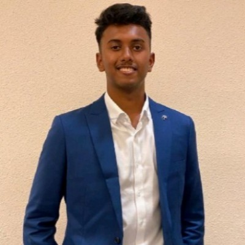

KKaushik Telidevara
Co-founder · Mechanical & ThermalKaushik leads the physical design of the Cyclops relay — the structures, materials and thermal systems that have to survive the stratosphere. He cut his teeth on Singapore's Galassia-5 satellite, working on flight hardware built for orbit.
A mechanical and thermal engineer by training, he turns the harsh physics of high altitude into a buildable spec. He studies at Stanford and serves as an officer in the Singapore Armed Forces.